What is GigSynth
GigSynth turns a laptop, mini-PC, or Raspberry Pi into a self-contained sound module for
live performance. You load one SoundFont (.sf2/.sf3) — shipped with
the app — and assign its instruments to your keyboards. Save the full rig for each section of
a song as a Part, then step through Parts during the gig with a single button. A built-in
MP3 player covers backing tracks.
Beyond keyboards, the same engine drives two more instruments: a Drumming
module that plays a multi-velocity drums.sf2 from any electronic kit, and a
Live Guitar Rig that uses the ¼″ input with NAM amp captures, cabinet IRs and
a four-slot pedalboard for recording and tracking.
Install & run
GigSynth builds to one native binary per platform. FluidSynth and an audio device are the
only hard requirements. The same binary serves the full three-view desktop UI; add
-mode pizero for the small-screen kiosk.
gigsynth # launch the desktop UI
gigsynth -sf2 GrandPianos.sf2 # preload a SoundFont
gigsynth -mode touch7 # 7-inch touchscreen layout (Pi 5)
gigsynth -mode pizero # Pi Zero LCD kiosk (single keyboard)
gigsynth -audio alsa # force an audio driverLinux
# Debian / Ubuntu
sudo apt install libfluidsynth-dev librtmidi-dev libasound2-dev \
libgl1-mesa-dev xorg-dev pkg-config
go build -o gigsynth .
./gigsynthAudio resolves to PipeWire/ALSA automatically. For lowest latency use a USB audio interface and the defaults in Latency & tuning.
Windows (PC)
Install MSYS2 with the FluidSynth + rtmidi dev packages (or use vcpkg) and make sure a C
toolchain is on PATH — cgo requires it. Then:
go build -o gigsynth.exe .
gigsynth.exeThe audio driver resolves to WASAPI/DirectSound automatically. Double-click the
.exe or launch it from a shortcut; Load SoundFont… in Settings on first run.
Raspberry Pi (3 / 4 / 5)
Build natively on the device — simplest path for cgo:
sudo apt install golang libfluidsynth-dev librtmidi-dev libasound2-dev \
libgl1-mesa-dev xorg-dev pkg-config
go build -o gigsynth .
./gigsynthA Pi 4/5 with a 7" touchscreen runs the app comfortably. Use a USB audio interface for clean, low-latency output.
7-inch touchscreen (Pi 5) — touch layout
The official Raspberry Pi 7" display is 800×480 — enough for the full app but too small to show three keyboards and five effect knobs at a comfortable finger size. So on a 7" screen GigSynth uses a focus-one-keyboard layout: tap KB1 / KB2 / KB3 to bring one keyboard to the front, and its sound, mix, key tuning and full FX (Chorus + Delay) appear as large touch targets. The Part shuttle and a compact transport stay on screen at all times.
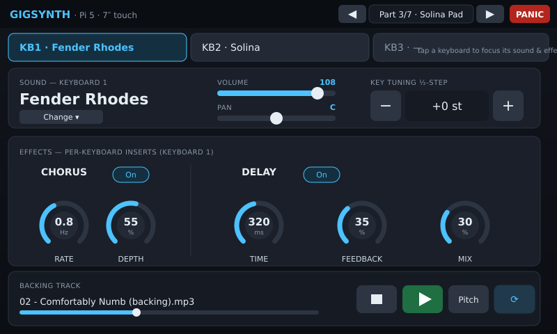
./gigsynth # auto-detects the small screen, or:
./gigsynth -mode touch7 # force the 7-inch touch layoutRaspberry Pi Zero 2 W (small LCD)
The Zero 2 W is CPU- and screen-limited, so run the dedicated kiosk mode designed for a ≈480×320 LCD and a single 61-key controller:
./gigsynth -mode pizero -sf2 /opt/gigsynth/soundfonts/Live.sf2It boots straight to the Home screen, shows two menu rows and four live knobs, and lets you shuttle through a song's Parts from the keyboard. See the dedicated Pi Zero UI Flow document for the full walkthrough.
systemd user service or
~/.config/autostart so the rig comes up ready the moment the Pi powers on at a gig.Core concepts
| Term | What it is |
|---|---|
| Layer / channel | One mixer strip = a SoundFont preset + volume, pan, mute, and routing, on its own MIDI channel. Up to four. |
| Routing | Which keyboard drives a layer, the key-split range (low/high), and transpose. This is how you build splits and stacks. |
| Song | A piece of music, made of ordered Parts. |
| Part | A recallable snapshot of the whole rig for one section — each keyboard's sound, volume, pan, pitch, split, and the bound MIDI device. Stepping Parts is the core live move. |
| PANIC | Kills all stuck notes and re-applies the mixer. |
| Master | Global output gain. |
Live view
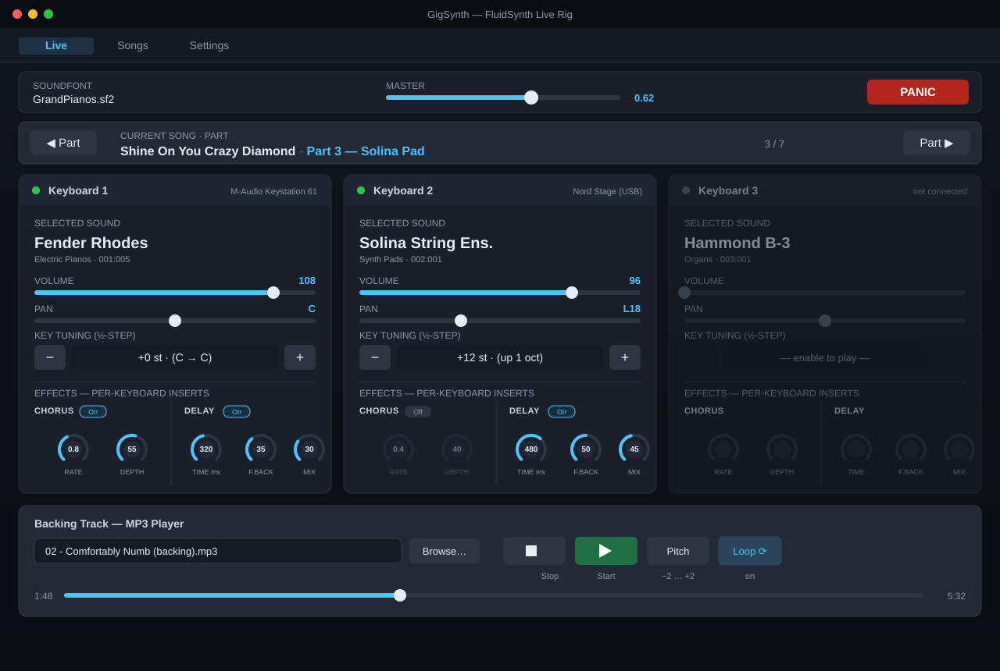
The Live view is the gig screen. From the top:
- Top bar — the loaded SoundFont, the Master gain slider, and the red PANIC button.
- Song / Part shuttle — ◀ Part and Part ▶ step through the current song's Parts; the centre shows the song and the active Part (e.g. 3 / 7).
- Three keyboard columns — one per controller. Each shows the selected sound name, a Volume slider, a centre-detented Pan slider, and Key Tuning (−/+ in half-steps). A grey dot means that keyboard isn't connected.
- Per-keyboard effects — a Chorus (2 knobs) and a Delay (3 knobs) insert sit at the bottom of every column, each with its own On switch. See Effects.
- MP3 player — see below.
Effects (chorus · delay · phaser · flanger)
Every keyboard has its own four-effect insert chain — Chorus → Phaser → Flanger → Delay — so you can, for example, run a lush chorus on the Rhodes, a slow phaser on a pad, and a dotted-eighth delay only on the lead synth. Effects are part of the live state, so they're stored in (and recalled with) each Part.
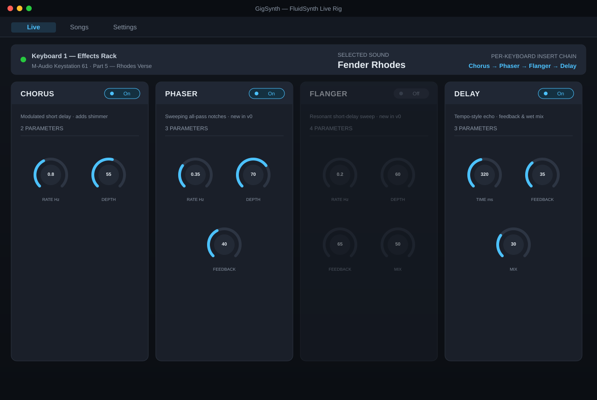
| Effect | Knobs | What they do |
|---|---|---|
| Chorus | Rate, Depth | Rate sets the modulation speed (Hz); Depth sets how wide the pitch shimmer is. Plus an On switch. |
| Phaser | Rate, Depth, Feedback | A swept four-stage all-pass: Rate moves the notches, Depth sets sweep width, Feedback adds resonance. Plus an On switch. |
| Flanger | Rate, Depth, Feedback, Mix | A short swept delay for the classic "jet" sound: Rate/Depth shape the sweep, Feedback the intensity, Mix the wet level. Plus an On switch. |
| Delay | Time, Feedback, Mix | Time is the echo spacing (ms); Feedback is how many repeats; Mix is the wet level. Plus an On switch. |
On the desktop all three keyboards' racks are visible at once. On a 7″ Pi 5 screen you focus one keyboard so the knobs stay finger-sized; on the Pi Zero the four encoders bank across the effect parameters. The keyboard's own assignable knobs can drive these in real time — see MIDI mapping.
Recording (MIDI & audio)
GigSynth can capture your whole performance — every MIDI event from every keyboard, plus the rendered audio — into a take you can replay later. Recording is one tap from the gig screen: the red REC toggle sits on the Live top bar next to PANIC.
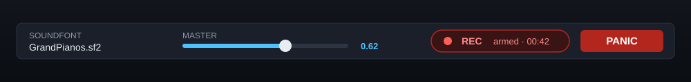
Stopped takes appear in the new Recordings view, where you can play, loop, or delete them (or Delete all). Each take notes whether it holds a MIDI track, an audio track, or both, with its duration.
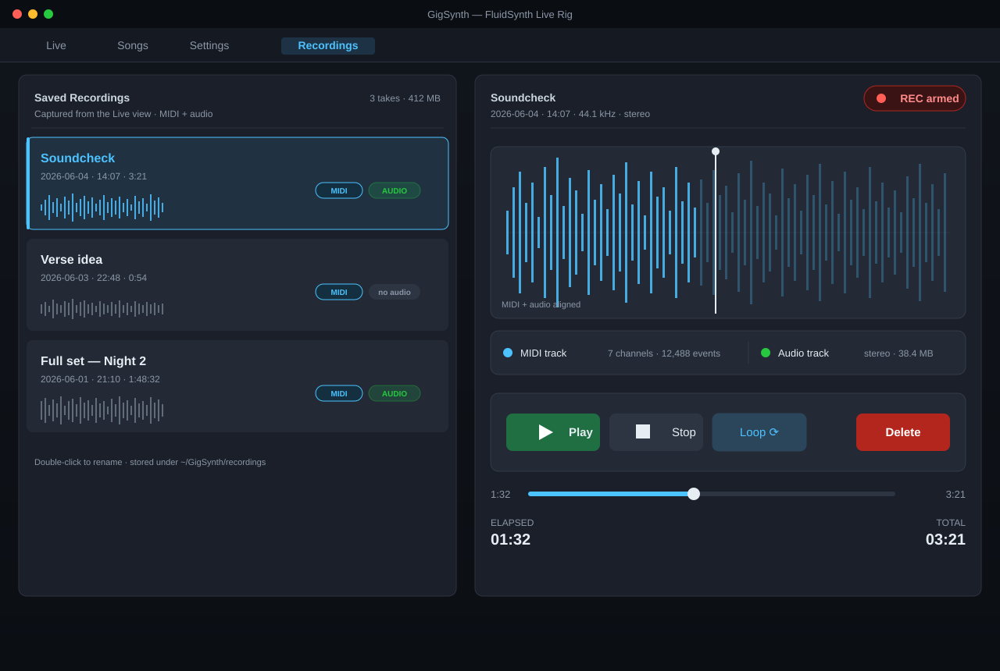
| Control | Does |
|---|---|
| REC ● (Live) | Arm a new take; press again to stop and file it. |
| Play ▶ / Stop ◼ | Replay the selected take from the start, or halt it. |
| Loop ⟳ | Repeat the take seamlessly — handy for practice. |
| Delete / Delete all | Remove one take, or clear the whole library. |
| Export | Write a take's captured audio to a .wav file to keep or share. |
Drumming — electronic-drum module planned
The Drumming view turns GigSynth into a high-end sound module for an electronic drum kit.
Plug your kit's USB-MIDI (or 5-pin DIN) into the device, load a multi-velocity drums.sf2,
and your pads trigger studio drum samples on MIDI channel 10 with full velocity response.
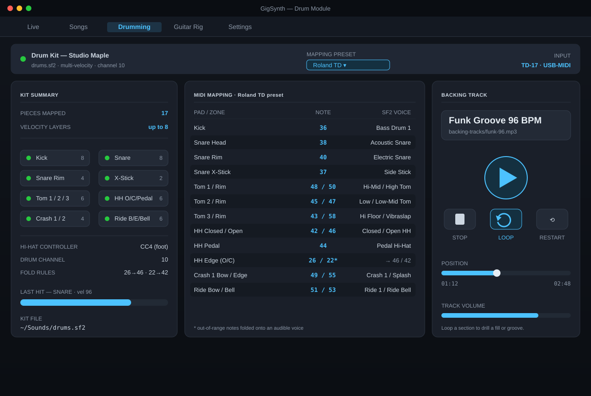
| Panel | What it shows |
|---|---|
| Kit summary | Kit name, mapped pieces, velocity-layer counts, drum channel and the active hi-hat controller. |
| MIDI mapping | Pad / zone → incoming note → SF2 voice for the selected preset, with a manufacturer picker. |
| MP3 player | Backing-track transport: start / stop / loop, position scrub and track volume. |
Pick your kit
Choose the preset that matches your module — GigSynth ships factory drum-trigger maps for the major brands. Most kits follow the General MIDI percussion map for the core pieces (kick 36, snare 38, hi-hat 42/46/44, toms, crash 49, ride 51); the presets add the brand-specific zones (rim shots, cross-stick, cymbal bell/bow/edge) and fold any out-of-range notes onto an audible voice so no pad is ever silent.
| Brand | Models | Notes |
|---|---|---|
| Roland | TD-17 / 25 / 27 / 50, VAD | The de-facto reference map; hi-hat edge uses notes 26 / 22 (folded to 46 / 42). |
| Yamaha | DTX series | Crash bow/edge swapped vs Roland, and the map differs between MIDI-DIN and USB — pick the matching column. |
| Alesis | Nitro / Command / Crimson / Strike | Follows Roland closely; hi-hat splash 21 / half-open 23 folded to 46. |
| Millenium | MPS-150 / 600 / 750 / 850 | Pure GM for the core pieces; extra zones GM-aligned. |
| Donner | DED-80 / 200 / 200X | GM-aligned with Roland-style crash/ride zoning. |
On small screens
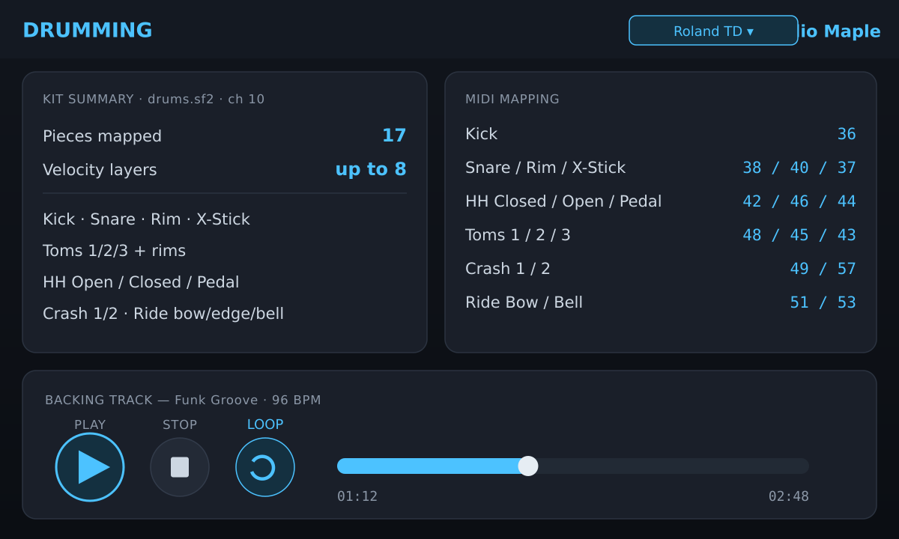
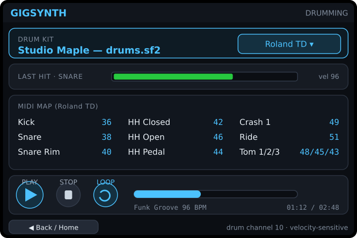
Guitar & bass rig (audio input) planned
Every GigSynth instrument — the keyboards and the desktop module — has a ¼″ guitar/bass input, so you can build a full amp-and-cabinet rig right on the device. The signal runs through an open-source Neural Amp Modeler (NAM) amp capture and a cabinet impulse response (IR), then the same per-keyboard effects you already have.
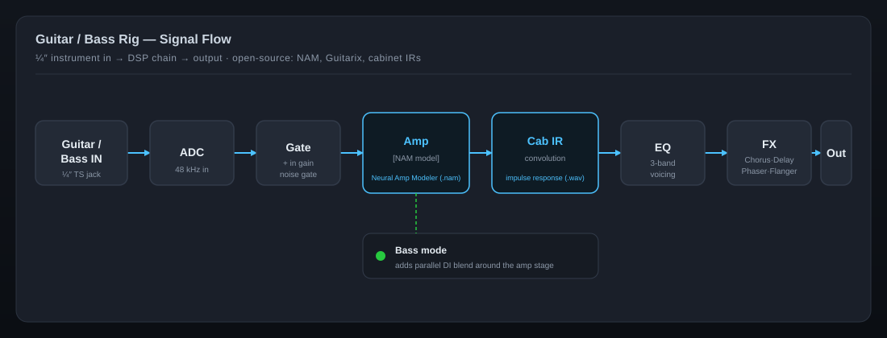
.nam) → Cabinet IR (.wav impulse response) →
3-band EQ → your Chorus/Delay/Phaser/Flanger → output. Bass mode adds a clean DI blend.| Stage | What it does |
|---|---|
| Input | ¼″ instrument jack → input gain and a noise gate, with a live input level meter. |
| Amp | Loads an open-source NAM amp capture (e.g. Tweed Deluxe, Plexi, Bassman) — Gain / Bass / Mid / Treble / Master. Guitarix models are an alternative backend. |
| Cabinet (IR) | Convolves a cabinet impulse response (e.g. 4×12 V30, 2×12, or a DI). Level + low-cut. |
| Pedals | Reuses the per-keyboard Chorus, Delay, Phaser and Flanger as post-amp effects. |
| Bass mode | Blends a clean DI with the amped signal for bass rigs. |
The whole rig is part of a Part, so it recalls per song section, and the onboard knobs/sliders map to it just like the mixer and FX.
On every screen
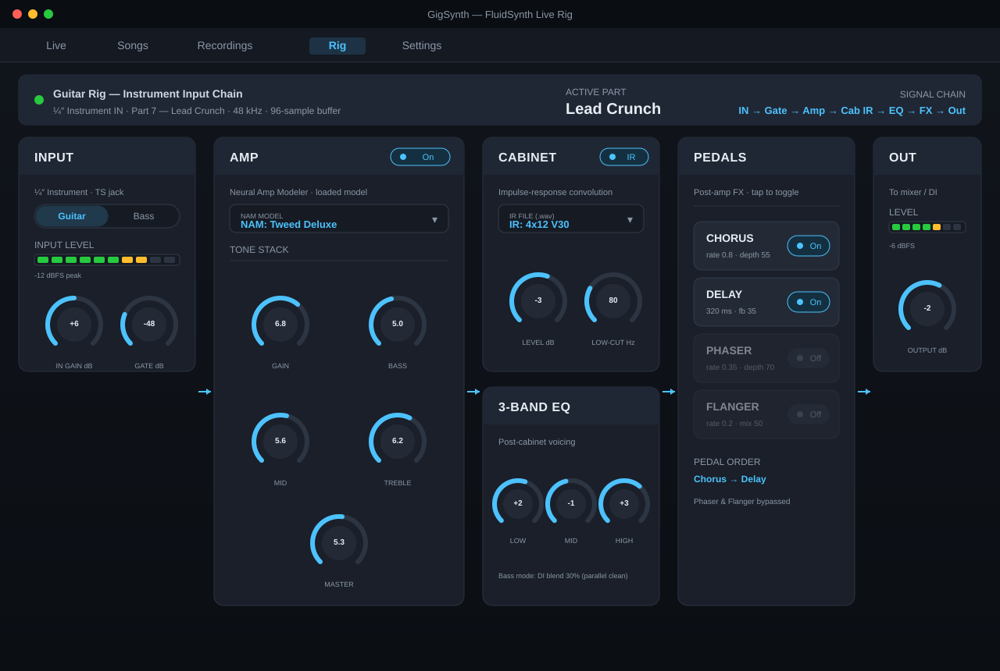
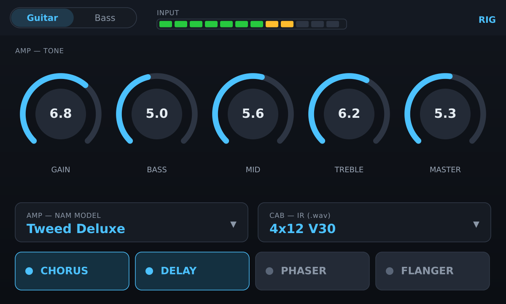
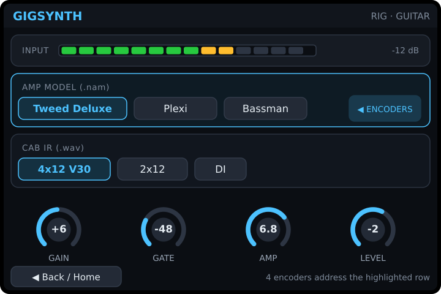
Live Guitar Rig planned
The Live Guitar Rig is the performance-focused front end to the rig above — built for recording, tracking and creating song parts. It gives you four effect slots, the four hardware knobs/sliders, a NAM amp and cabinet IR, storable combinations, and a backing-track player that can drop the original guitar so you can play over it.
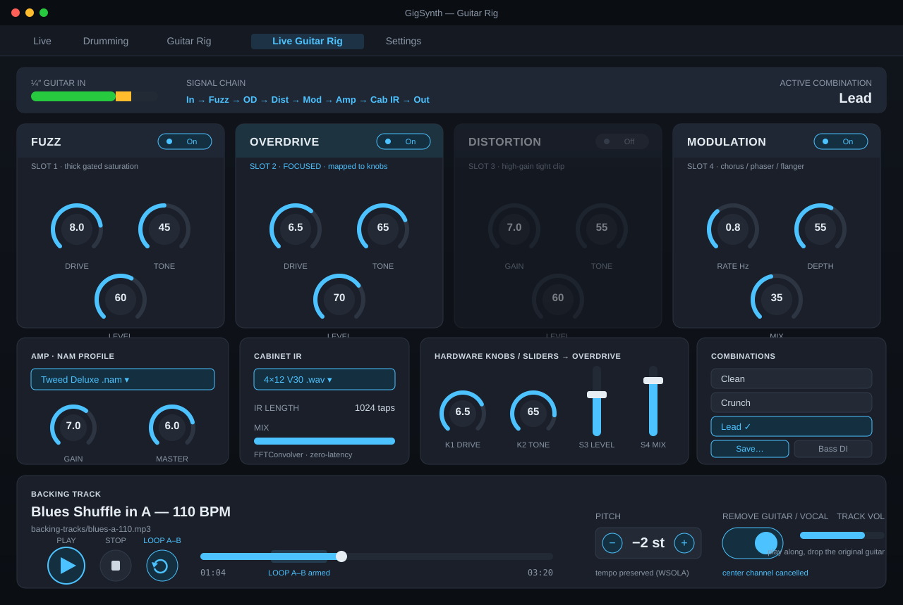
| Element | What it does |
|---|---|
| 4 effect slots | Fuzz · Overdrive · Distortion · Modulation — each toggles on/off with its own parameters. Focus a slot to map it to the knobs. |
| 4 knobs / sliders | The onboard controls bind to the focused slot's parameters (e.g. Drive · Tone · Level · Mix). |
| Amp + Cab | Pick a NAM amp capture (.nam) and a cabinet IR (.wav); set amp Gain / Master and IR mix. |
| Combinations | Save and recall named setups (Clean, Crunch, Lead, Bass DI…) — the four slots plus amp/cab. |
| MP3 player | Start / stop / loop A–B, pitch shift (tempo preserved) and Remove guitar/vocal (centre-channel cancel) so you can track over the backing. |
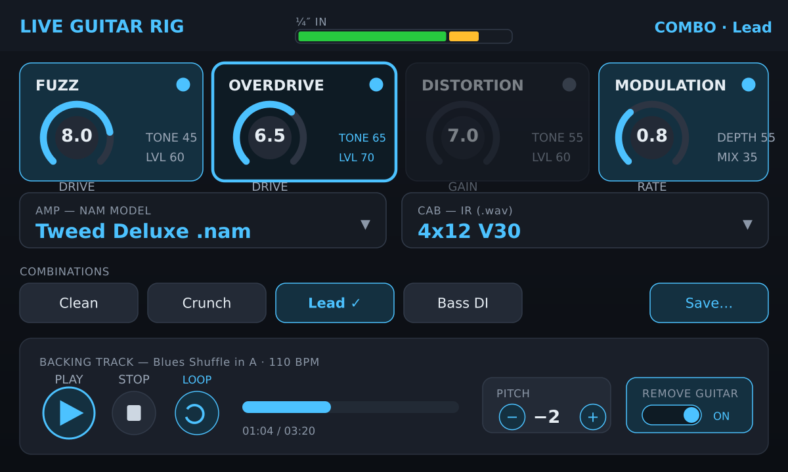
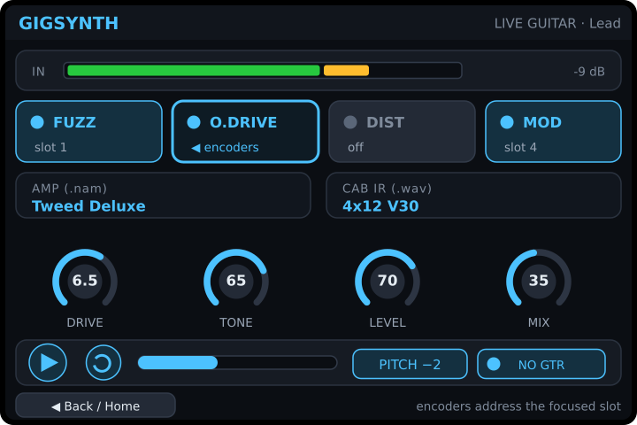
MP3 backing player
Select a track with Browse…, then:
| Control | Does |
|---|---|
| Start ▶ | Play / resume the track. |
| Stop ◼ | Stop and rewind to the start. |
| Pitch | Nudge playback ±2 semitones to match your tuning or a singer's key (tempo preserved). |
| Loop ⟳ | Repeat the track or an A–B section (highlighted when on) — handy for rehearsal sections. |
| Remove guitar/vocal | On the Live Guitar Rig, cancels the centre-channel content so you can play the part yourself over the rest of the mix. |
The progress bar shows elapsed / total time and can be scrubbed. MP3 output mixes alongside the synth at the OS audio layer.
Songs & Parts view
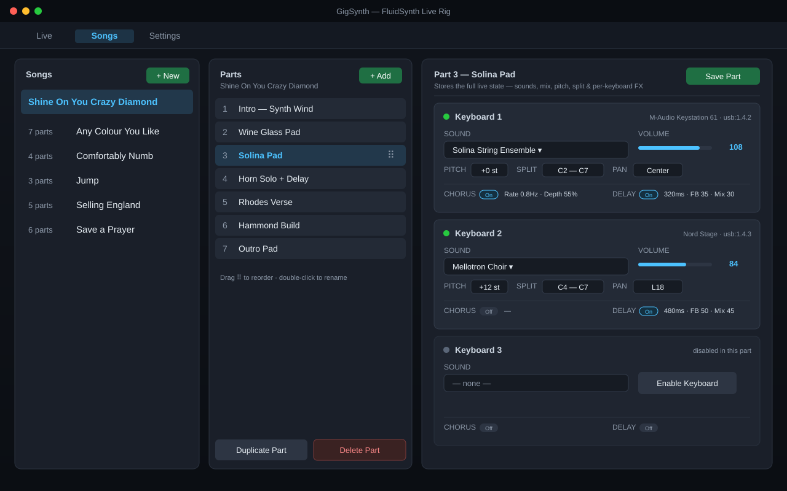
This is where you build your set list. Three columns:
- Songs — your library. + New adds a song; each row shows how many parts it has.
- Parts — the ordered sections of the selected song. + Add appends a part, drag the ⠿ handle to reorder, double-click to rename, and Duplicate / Delete as needed.
- Part editor — per keyboard (1–3): the sound, volume, pitch (± semitones), key split, pan, and the Chorus / Delay settings, plus the bound MIDI device (down to its USB port). Save Part stores the snapshot. Recalling the part later restores all of it — including each keyboard's effects.
Settings view
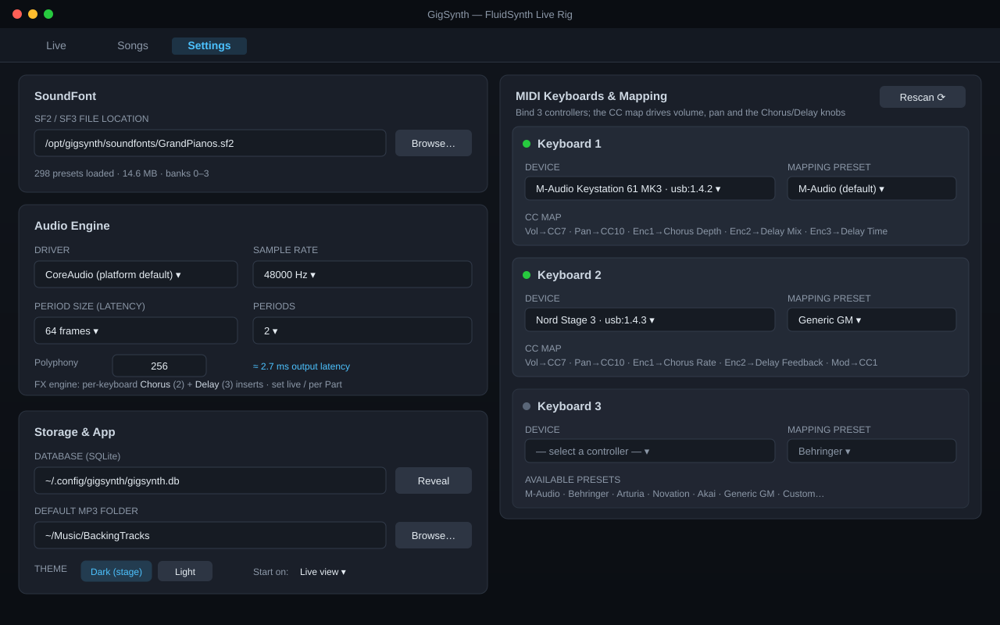
- SoundFont — choose the
.sf2/.sf3file location; the app reports presets loaded and banks available. - Audio Engine — driver, sample rate, period size and periods (latency), and polyphony. The estimated output latency updates as you change them.
- Storage & App — the SQLite database path (your song library), the default MP3 folder, theme (dark stage / light), and which view to start on.
- MIDI Keyboards & Mapping — see below.
MIDI keyboards & mapping
GigSynth listens to up to three controllers at once and tags every event with its source device, so each keyboard routes independently. In Settings, bind each of the three slots to a detected device and pick a manufacturer mapping preset so the keyboard's own knobs and sliders drive the mix in real time.
| Preset | Typical bindings |
|---|---|
| M-Audio | Vol → CC7, Pan → CC10, Enc1 → Chorus Depth, Enc2 → Delay Mix, Enc3 → Delay Time, Sustain → CC64 |
| Behringer | Vol → CC7, Pan → CC10, encoders → CC70–77 (mapped to Chorus/Delay knobs) |
| Arturia / Novation / Akai | Vendor default CC banks for faders & encoders |
| Generic GM | Vol → CC7, Pan → CC10, Expr → CC11, Mod → CC1, Sustain → CC64 |
| Custom… | Hand-map any CC to Volume / Pan / Pitch / Chorus Rate · Depth / Delay Time · Feedback · Mix |
Use Rescan ⟳ after plugging in a controller. Volume and pan coming from the keyboard control the layer mix directly; the on-screen sliders stay in sync.
Pi Zero UI (small LCD)
The Pi Zero 2 W runs a purpose-built kiosk for a single keyboard and a tiny screen — two menu rows and four always-live knobs (Volume, Pan, Pitch, Reverb), with Part navigation from the controller.
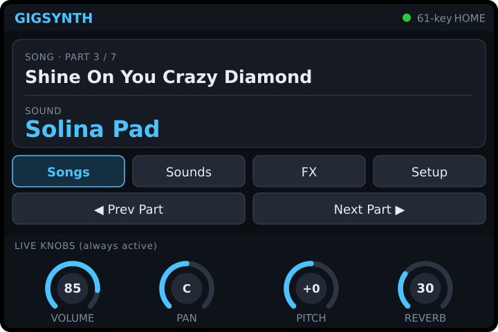
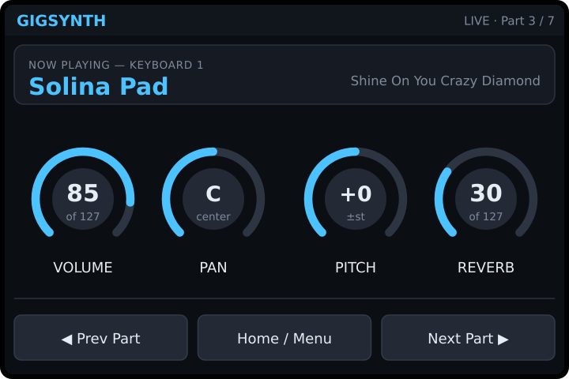
Full walkthrough, navigation diagram, and the keyboard-button mapping are in the Pi Zero 2 W UI Flow document.
Latency & tuning
The defaults — 48 kHz, period size 64, 2 periods — are a good low-latency live starting point (≈2.7 ms output). Lower the period size for less latency at the cost of CPU and xrun risk; raise it if you hear dropouts. On a Pi, prefer a USB audio interface over the on-board jack.
Troubleshooting
| Symptom | Fix |
|---|---|
| No sound | Confirm a SoundFont is loaded (Settings) and a layer/keyboard is enabled with volume up. Check the audio driver in Settings. |
| Keyboard not listed | Plug it in, then Rescan ⟳ in Settings. On Linux ensure your user can access the MIDI device. |
| Stuck note | Hit PANIC — it silences everything and re-applies the mixer. |
| Crackles / dropouts | Raise period size / periods in Settings → Audio, or use a dedicated USB audio interface. |
| “no audio device” at startup | Another app may own exclusive audio, or no device is present. Try -audio alsa (Linux) / default driver. |
GigSynth · FluidSynth live rig · this guide covers Linux, Windows, Raspberry Pi and Pi Zero 2 W.